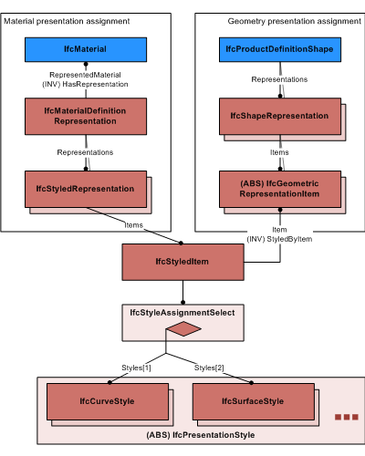

8.12.3.28 IfcStyledItem
| Element mit Stilinformationen |
The IfcStyledItem holds presentation style information for products, either explicitly for an IfcGeometricRepresentationItem being part of an IfcShapeRepresentation assigned to a product, or by assigning presentation information to IfcMaterial being assigned as other representation for a product.
NOTE Definition according to ISO/CD 10303-46:1992
The styled item is an assignment of style for presentation to a geometric representation item as it is used in a representation.
NOTE Entity adapted from styled_item defined in ISO10303-46.
HISTORY New entity in IFC2x2.
IFC2x2 Addendum 1 CHANGE The entity IfcStyledItem has been made non abstract and the attribute Name added.
IFC2x3 CHANGE The attribute Item has been made optional, upward compatibility for file
based exchange is guaranteed.
IFC4 CHANGE The subtype IfcAnnotationOccurrence and its subtypes are deleted. Use IfcStyledItem for all instantiations. The data type of Styles has been changed to IfcStyleAssignmentSelect
Use Definition
Figure 341 illustrates use of IfcStyledItem for the two usage examples:
- As a presentation for a geometric representation item
- As a presentation for a material definition
NOTE The new IfcStyleAssignmentSelect allows the direct assignment styles, such as IfcCurveStyle, IfcSurfaceStyle without using the intermediate IfcPresentationStyleAssignment
 |
Figure 341 — Styled item |
XSD Specification:
<xs:element name="IfcStyledItem" type="ifc:IfcStyledItem" substitutionGroup="ifc:IfcRepresentationItem" nillable="true"/>
<xs:complexType name="IfcStyledItem">
<xs:complexContent>
<xs:extension base="ifc:IfcRepresentationItem">
<xs:sequence>
<xs:element name="Styles">
<xs:complexType>
<xs:group ref="ifc:IfcStyleAssignmentSelect" maxOccurs="unbounded"/>
<xs:attribute ref="ifc:itemType" fixed="ifc:IfcStyleAssignmentSelect"/>
<xs:attribute ref="ifc:cType" fixed="set"/>
<xs:attribute ref="ifc:arraySize" use="optional"/>
</xs:complexType>
</xs:element>
</xs:sequence>
<xs:attribute name="Name" type="ifc:IfcLabel" use="optional"/>
</xs:extension>
</xs:complexContent>
</xs:complexType>
EXPRESS Specification:
|
|
| ApplicableItem | : | NOT('IFCPRESENTATIONAPPEARANCERESOURCE.IFCSTYLEDITEM' IN TYPEOF(Item)); |
|
 EXPRESS-G diagram
EXPRESS-G diagram
Attribute Definitions:
| Item | : |
A geometric representation item to which the style is assigned.
IFC2x2 Add2 CHANGE The attribute Item has been made optional. Upward compatibility for file based exchange is guaranteed.
|
| Styles | : |
Representation styles which are assigned, either to an geometric representation item, or to a material definition.
IFC4 CHANGE The data type has been changed to IfcStyleAssignmentSelect with upward compatibility
for file based exchange.
NOTE Only the select item IfcPresentationStyle shall be used from IFC4 onwards, the IfcPresentationStyleAssignment has been deprecated.
|
| Name | : | The word, or group of words, by which the styled item is referred to. |
Formal Propositions:
| ApplicableItem | : |
A styled item cannot be styled by another styled item.
|
Inheritance Graph:
 Link to this page
Link to this page